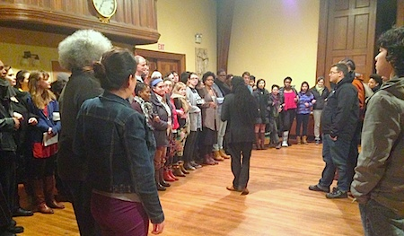
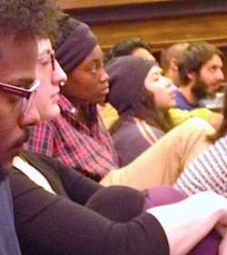
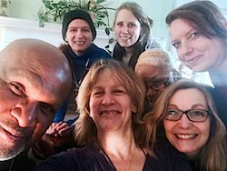

Dear Friends,
I write to you from Northern California, where the Paperwhites have been in bloom since just after Christmas; these first blooms of spring come earlier and earlier each year.
It's always miraculous that these fragrant delicate flowers on strong straight green stems could come from an inert looking bulb. But they come, season after season, affirming hope, bringing joy, persevering in spite of the forces of climate change and the unlikeliness of their fruition.
Like me, you know that peace work is also like that, we plant seeds, we persevere, major forces of destruction threaten to lay waste our nascent efforts, success seems unlikely or at best distant, but somehow, miraculously, beauty and truth and justice and peace still break through.
This year, we celebrate 100 years of persevering for peace.
For 100 years, the members of the Fellowship of Reconciliation have been sowing seeds of justice against all odds and in unlikely circumstances.
Since the founding of the U.S. branch of the Fellowship of Reconciliation by 68 men and women on Long Island in November 1915, members of FOR have met, labored, dreamt, cried, cheered and persevered.
As we move into our Centennial year, I want to share with you how we are seeding the next century of action for peace and justice. Additionally, I'd like to welcome you to mark this year as a supporter of FOR by inviting you to attending the special events and happenings we have planned!
You have been an integral and essential part of FOR's history. Now be a part of FOR's future!

Supporting and coordinating grassroots activism
Last year at this time, I shared with you that we were making a shift in our programmatic work to focus on grassroots activism in the United States.
While we will continue to be involved globally through the leadership of International FOR, we determined that we could have the most impact for peace by tending to the root causes of war and militarism that were home-grown.
To that end, we've been supporting the young leaders in the #BlackLivesMatter movement and offering nonviolent direct action trainings in Ferguson, Missouri, and around the country.
In the months and years to come, we plan to expand on our nonviolent training work through a coordination of efforts with other activist groups.
We are in the process of becoming fiscal sponsor to other freedom-focused groups in Denver, Atlanta and Boston. We've also collaborated with the Stony Point Center and the Presbyterian Peace Fellowship in operating two hub houses in St. Louis where activists and trainers can sleep and work, and plan to continue this service.
You and your work are essential to the future of FOR-USA. We are prioritizing, connecting and supporting local FOR chapters, peace fellowships, and affiliates through staff presence and new resources such as a new and improved website, curricula and regular national conference calls.
Together, we can move boldly into FOR's second century.
Prioritizing connections with young adults
 Do you remember the time when you began to invest in, and commit to a life of nonviolence and work for peace? Remember the time when you first heard about FOR? Do you remember the time when you began to invest in, and commit to a life of nonviolence and work for peace? Remember the time when you first heard about FOR?
I would guess that for many of us the answer would be, "When I was a young adult." That was certainly true for me, as I first heard about FOR as a 24-year-old seminary student embarking on a vocational path of service.
Throughout the last century, the passionate committed leadership of young adults has inspired the Fellowship of Reconciliation, and in turn FOR has become a life-giving and nurturing community for many.
In the 1930s, it was the youth wing of FOR-USA that first suggested to the larger body that FOR become formally interfaith. In the 1940s, George Houser and seven other Union seminarians (the Union 8) in their early 20s refused to register for the selective service and were sent to Danbury Prison. Houser then went on to start several FOR cell groups in the Midwest before embarking on the Journey of Reconciliation at age 30 with Bayard Rustin.
In the 1960s and '70s, thousands of young adults joined FOR-USA when they needed support to resist the Vietnam War draft or when they came home as veterans searching for a way to give their service meaning.
Since last fall alone, we've trained nearly 2,000 people in nonviolent direct action, many of whom are young adults.
In addition, we are conducting residential retreat and training weekends through campuses all over the country to educate and emphasize the importance of being grounded in the principles of nonviolence as we seek to build the beloved community.
The first of these was held on the #ReclaimMLK weekend with 23 college students, one of whom said:
"The discussions of the philosophy of nonviolence helped me move from hating injustice to loving justice. ... A retreat like FOR['s] is the best prevention for activist burnout."
Using what we have to support a sustainable struggle
As we consider what the next century of work for peace and justice looks like for the Fellowship of Reconciliation, we have come to the conclusion that we must let go of some of our former ways of doing things.
In the mid-'50s, the Fellowship of Reconciliation's headquarters moved to a stately 20,000-square-foot mansion on the shores of the Hudson River. Known as Shadowcliff, the building provided office and meeting space, sleeping quarters, a publication house, and respite for staff and volunteers for many years. Now, however, we find that the upkeep on this property that is also a century old is taking precious resources that are better allocated toward our programmatic work.
In its October 2014 meeting, the National Council of FOR-USA passed a resolution to set up a task force that would investigate, with due diligence, the potential sale of Shadowcliff. We look forward to new possibilities for service and impact -- but also know that the process of relocating could take several years.
There is no doubt that the twentieth century would have looked quite different if not for your efforts and those who have come before us through the Fellowship of Reconciliation.
I expect FOR will have a significant mark on the twenty-first century as well.
Please mark you calendar now to help us celebrate all that has happened and all that is yet to come:
Happy 100th birthday FOR-USA!
- Nov. 6: FOR centennial exhibit at Union Theological Seminary, New York City
- Nov. 7: Multi-faith celebration service (venue to be announced)
- Nov. 7: Centennial reception, first screening of centennial documentary, silent auction and celebration dinner at The Riverside Church, New York City
- July 1-4, 2016: National FOR conference in Seabeck, Washington
Share your FOR birthday story

You can also help us celebrate FOR USA's 100th birthday by sending birthday messages answering the question "Why FOR?", or finishing the declaration, "I am FOR ...!"
Share those pivotal moments and events that led you to decide FOR was your heart's answer to the injustices of life.
Your messages can be in the form of photos, videos, cards, and/or letters. We'd like to use your birthday wishes in a countdown timeline to our Nov. 7 celebration dinner.
To submit your message, just reply to this email, or contact Linda Kelly at communications@forusa.org.
We have big plans and big dreams for the next century, but we can't proceed without your support.
Please make a donation to support the work of FOR-USA and the celebrations for our centennial today.
Your support is an investment in the future of FOR, in the health of grassroots groups and in the peacemakers of tomorrow.
With deep gratitude for your continued faithfulness and generosity,
 Rev. Kristin Stoneking Rev. Kristin Stoneking
Executive Director
Fellowship of Reconciliation
|